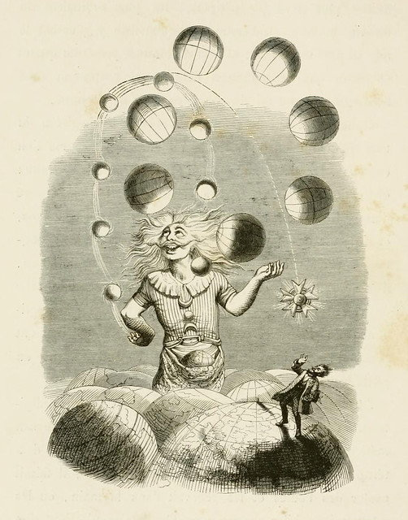
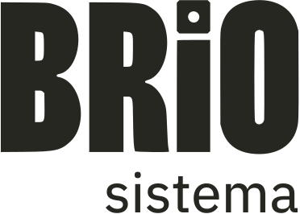

Sistemas, herramientas y módulos de rol, por Javier U

Reglas y hojas de personaje para partidas de una o pocas sesiones.
Personajes y tiradas de dados compartidas en una sala de juego.
Ambientes y música que puedes mezclar y guardar como escenas.